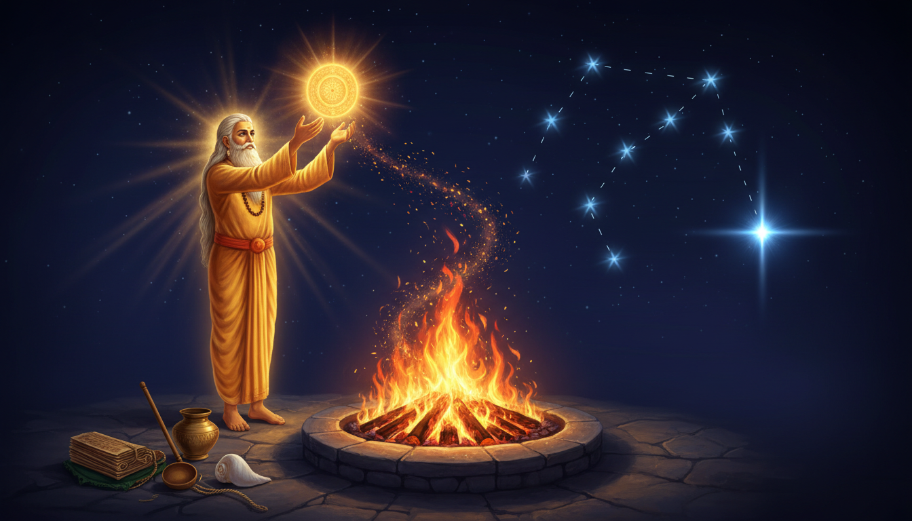

1. His name was a beam of light, and he was born of a mind
Start with the word itself, because in this tradition the name is rarely decorative.

Marīci (मरीचि) means a ray of light, a beam. And the first thing the tradition tells you about him is that he is a manasputra — a mind-born son of Brahma. Not born from a body, not born from a sacrifice. Born from thought.
Wikipedia's Marichi article lists him as one of the ten Prajapatis, the mind-born rulers who are answerable for the rest of creation:
Marichi, Atri, Angirasa, Pulaha, Pulasthya, Krathu, Vasishta, Prachethasa, Bhrigu, Narada.
Ten of them. One of them was a beam of light.
He is also one of the Saptarishi — the seven seers. And here the tradition is careful: the Vedic Samhitas never enumerate these seven by name. It is the later Brahmanas and Upanishads that do so, and the Mahabharata that gives them their working biographies. In parts of India, the seven stars of the Big Dipper are named after these seven rishis — Vasishtha, Marichi, Pulastya, Pulaha, Atri, Angiras and Kratu — with a faint companion star near Vasishtha called Arundhati.
There is one more line in the Marichi article that is worth reading twice, because it does quiet damage to the easy version of this story: Marichi is not directly mentioned in the Vedas. It is his descendant Kaśyapa Mārīca to whom the Anukramaṇī attributes several suktas of the Rigveda. So the man we are writing about is a post-Vedic, text-transmitting figure — a compiler and ritual author, not a hymnic visionary. Hold that in mind. It is the reason his achievement is a manual, and not a revelation.
And then this, which is the line that should make you stop and re-read the name:
Marichi, like some of the other sages, followed the path of worldly duties denouncing total renunciation. He had many children, the notable one being sage Kashyapa.
A mind-born son of Brahma who declined renunciation. He chose the household. Which makes the next section unavoidable.
2. The stone that became a shrine: what happened to Dharmavrata
This is the rarest and most occult thing in Marichi's record, and almost nobody has written about it.
Marichi had a wife named Dharmavrata. One day he asked her to massage his legs — a servant's task, and in the household of a rishi it carried its own weight. While she was working, he fell asleep. And in that sleep, Brahma came to her.
Now put yourself inside that moment. A woman is performing an intimate act for her husband. The Creator of the universe appears beside her. And she has to decide, in the seconds available, which duty is greater.
She chose the deity. She attended to Brahma.
Marichi woke and found his wife gone from her duty. And he cursed her — petrified her, turned her to stone.
She did not accept it. She proved her innocence by performing penance amid the fires — that is, she stood in fire and the fire did not take her, because her conduct had been correct. Vishnu was pleased by her devotion. She asked Vishnu to reverse the curse.
And Vishnu said no — but with a modification that saved the entire story. The curse itself could not be undone. However, the stone she would become would continue to be regarded as Devashila, and would be considered sacred, and would carry the essence of the Trimurti and of Lakshmi.
Read that again. A man's anger turned his wife's body to stone. The stone then became a vessel holding Brahma, Vishnu, Shiva and Lakshmi together. The most violent act in his biography produced the most capacious object in it.
The working form: the curse that becomes a shrine. In remedial astrology, the worst-shaped obstacles are frequently the ones that carry a hidden charge. A Devashila stone in your chart is not a rock; it is a stone with four deities and Lakshmi already inside it. When you diagnose a chart, look for the placements that are harsh and freighted — a hard aspect that also carries a significator of an institution, a lineage, a mother-figure, a house, or an inheritance. Those are not the problems to be attacked. Those are the problems to be mobilised. The classical move is to build the remedy around what the stone already holds, rather than to break the stone in order to get at what is inside it.
The working form: the offering that outranks the sacrifice. Note the shape of Dharmavrata's story: she chose the deity over the husband's immediate command, and the tradition confirmed her, while the tradition did not reverse her husband's curse. The husband's standing was the thing that failed the test, not the wife's. That is a diagnostic you can use on a person: the demand that was refused was not the demand itself but the authority behind it.
And one more thing, which will matter later. Marichi married Kala — Time itself, or the goddess of it — and fathered Kashyapa, and through him the grandfather of the devas and the asuras. The same man who made a stone sacred was the ancestor of the entire branching lineage of gods and demons.
3. Nine disciples, four survivors, and one of them wrote the blueprint
Now the thread that becomes the spine of this article.
The Vaikhanasa tradition, one of the two great South Indian Vaishnava Agama systems (the other being Pancharatra), tells a very specific story about its founding.
A sage named Vikhanasa — a manifestation of Vishnu — mastered the Vedas and the Shastras. He learned how to worship Vishnu as an arcāvatāra: a temple image regarded as the deity's iconic form. He travelled to the holy forest of Naimisharanya and composed the Vaikhanasa Kalpasutra. Then he taught the Sri Vaikhanasa Bhagavad Shastra to his four disciples: Atri, Bhrigu, Kashyapa and Marichi. That text contained the procedures of Samurtarcana and Amurtarchana — worship with the image and worship without it — and the whole discipline of serving Vishnu in his image form.
And here is the detail that makes the story sharp: Vikhanasa's first transmission, in the very first manvantara, went to nine disciples —
Atri, Bhrigu, Marichi, Kashyapa, Vasishta, Pulaha, Pulasthya, Krathu and Angiras.
Only four of the nine have a surviving line today: Bhrigu, Marichi, Kashyapa and Atri. Those four are named as the propagators of the Vaikhanasa śāstra. Five of the nine are gone. That is a lineage loss rate of better than half, and it happened early.
Now the sharpest fact of all, and it is buried in a sentence about a scripture:
A composition by Sage Vikhanasa's disciple Marichi, namely, Ananda-Samhita states Vikhanasa prepared the Vaikhanasa Sutra according to a branch of Yajurveda and was Brahma himself.
Marichi is the man who wrote the attestation that his own teacher was his own father.
A mind-born son of Brahma wrote the scripture that says his guru was Brahma. Do not skip that. It means Marichi had the standing to make a theological claim about the origin of the tradition he would then carry, and the tradition preserved the claim and kept his texts in circulation. This is not a sage quoting a tradition. This is a sage legislating one.
The working form: transmission is the remedy. When a graha is obstructed, ask the question Marichi's authorship answers: who is the authorised transmitter of this teaching, and is that line intact? In Jyotiṣa terms, this is the func of the fourth house and the fourth lord — education, lineage, the estate, the vehicle of transmission, the thing that must be carried forward for the thing to survive. A fourth-house problem is very often not "my education is bad" but "the chain is broken". The remedy is re-establish the chain: the teacher, the lineage, the daily transmission. A mantra recited without a teacher, without a lineage, and without a fixed time is Marichi's Vaiṣṇava tradition without a Vaiṣṇava — the text survives, the transmission does not.
4. The eight Saṃhitās: what Marichi actually wrote
Here is the inventory, and it is the core of the answer to "what did he achieve".
The extant Vaikhanasa Agama material numbers twenty-eight texts. And Wikipedia records exactly where that list comes from:
The extant texts of Vaikhānasa Agama number 28 in total and are known from the texts Vimānārcakakalpa and Ānanda saṃhitā, both composed by Marīci, which enumerate them.
Both of the index texts are by Marichi. So the man did not merely survive in the lineage — he wrote the catalogues. He is the reason we know the shape of the canon at all.
Then the eight, which the same article attributes directly to him:
The eight Saṃhitās authored by Marīci are Jaya saṃhitā, Ananda saṃhitā, Saṃjnāna saṃhitā, Vīra saṃhitā, Vijaya saṃhitā, Vijita saṃhitā, Vimala saṃhitā and Jnāna saṃhitā.
And then a scrupulous little footnote that most people would skip and that I am going to make a point of:
However, ānanda saṃhitā attributes the following works to Marīci: jaya, ānanda, saṃjnāna, vīra, vijaya, vijita, vimala and kalpa saṃhitā.
Same eight names in the same order — with Jnāna in one list and Kalpa in the other. The corpus is not identical according to its own index. A library that disagrees with itself by one title is a real library, not a tidy one.
Now look at what the eight names actually are, because this is where the article gets its teeth:
Jaya — victory. Ananda — bliss. Saṃjnāna — right knowledge. Vīra — the hero. Vijaya — victory again, distinct from Jaya. Vijita — the conquered, or the one who has conquered. Vimala — the pure. Jnāna / Kalpa — knowledge, or the rite.
That is a curriculum in eight movements. It opens with victory and closes with knowledge or the rite — and in between it puts bliss, right knowledge, heroism, and purity. A manual that begins by resolving the question "who wins" and ends by resolving "what do I know and what must I do" is describing a whole life, not a liturgy.
And this is where the numbers come in, because the numbers are the house style of this tradition and they are worth doing properly:
- 28 — the extant Vaikhanasa Agamas, enumerated by Marichi's own two texts.
- 28 Shaiva Agamas, 64 Shakta Agamas (called Tantras), and 108 Vaishnava Agamas (the Pancharatra Saṃhitās) — the three branches of Agama literature, plus numerous Upa-Agamas.
- And a separate census, from the Paramanada Tantra, of sectarian tantras: 6,000 Vaishnava, 10,000 Shaiva, 100,000 Shakta, 1,000 Ganapatya, 2,000 Saura, 7,000 Bhairava, and 2,000 Yaksha-bhūtadi-sādhana.
Set these side by side and you see the real shape of the tradition: a 28 here, a 64 there, a 108 at the top, and a whole census running into six figures. And here is the coincidence that is not a coincidence — 108 is the sacred number of the rosary, the bead count, and the fine division of the zodiac into 108 padas. Twenty-seven nakshatras × four padas = 108 padas of 3° 20'. The 108 Vaishnava Agamas and the 108 padas of the sky are the same number doing the same job: they are how a large totality is made countable.
The working form: the eight movements are a sequence, and you are at one of them. Do not do all eight. Identify which movement your chart is actually in, and do that one properly. Jaya — victory against an obstacle; Vijaya — victory that comes with the claim attached; Vijita — the conquered one, which is the hardest (the work of being conquered rather than conquering); Vimala — purity, the removal of contamination; Saṃjnāna — getting the diagnosis right; Ananda — the result that is actually wanted; Vīra — courage, the one that is needed when the other seven are done. Read your chart against that ladder and name the rung. A remedy for the wrong rung is why the previous remedy failed.
5. The ranking that changed how the ritual was done
Here is the single most decisive sentence in the whole Vaikhanasa record, and it is about Marichi.
The Vaikhanasa doctrine states that spiritual liberation (moksha) is release into Vishnu's abode of Vaikuntha. The nature of a devotee's moksha is regarded to be dependent on their performance of japa (attentive repetition of prayer), huta, yajna (ritual sacrifice), archana (service to images), and dhyana (yogic meditation). Of the four, the text known as the Marichi Samhita offers precedence to archana.
Read the ranking: archana — service to the image — is placed above huta and yajna, the fire sacrifice. The man whose name means a ray of light wrote the manual that puts the image above the fire.
And note the honest little wobble in the sentence: it lists five practices — japa, huta, yajna, archana, dhyana — and then says "of the four". The text is itself slightly untidy, which is what real liturgical manuals look like.
Now the Vaikhanasa doctrine behind it, in the same article:
Most Vaikhanasa literature is almost completely concerned with rituals... To Vaikhanasas, their temple worship is a continuation of the Vedic yajna. Regular and correct worship of Vishnu in a temple are regarded to bring the same results as the fire sacrifice even for people who do not maintain their fires.
And then the actual sequence, which Wikipedia sets out in detail and which is the most practically useful ritual I have found in a long time:
- After purification and meditation to identify with Vishnu, the devotee surrenders to Vishnu and places the movable image on a bathing pedestal and elaborately bathes it. This prepares for receiving the presence of God by immediate contact via a connecting string.
- The invocation begins with a Mantra: the Imperishable is linked to the Perishable, and the Self is released from all evil as it knows God.
- Flowers are presented to all the deities present. Then the Aatmasukta is recited, identifying the body of the devotee with the cosmos.
- Then meditation on Vishnu's Niśkala aspect — the formless aspect — with a specific purpose: to request Vishnu take his Sakala form, the manifest form, in the movable image, so that the devotee can converse with Him.
- A Puja ceremony takes place with God as the royal guest.
- Then a Homa — an offering into the fire — Homaagni — and a Bali, an offering that may be visible, touchable, audible or eatable.
- An offering of Havis, cooked food, is important as God's meal. Afterwards the Prasaada is eaten by the worshippers and devotees.
- The offering area is cleaned and a Bali of cooked rice sprinkled with butter is offered.
- Then Pradakshina, circumambulation from left to right clockwise, around the temple.
- After Daksina, the officiating Brahman's share of the Prasadam is given.
- Vishnu is meditated upon as the personal manifestation of the sacrifice.
- Finally Puspanjali, known as Mantra Pushpam, offering a handful of flowers at God's lotus feet after chanting the holy mantras, and the temple door is closed after Mangala arathi.
Look at the shape of it. There is a fire in the middle of the image-worship, not instead of it. Homaagni is inside the archana. The image is bathed, dressed with flowers, fed, served, circled, and then the door is closed. It is not a meditation. It is a service with a sequence and a timetable, and the sequence ends by shutting a door.
The working form: the escalation ladder for a stalled remedy. Marichi's own ranking gives you a lawful order of operations when a remedy is not working, and the order is not the one most people try: japa first (attentive repetition of prayer), then dhyana (yogic meditation), then the fire — huta and yajna — and archana last in the list of methods but first in precedence. If you have been reciting for months and nothing has moved, the tradition's own answer is not more reciting. It is: get the image involved. Install or commission one. Wash it. Light the lamp in front of it. Offer it food and take the prasāda home and eat it. Offer it flowers and a cloth and a lamp daily at a fixed hour. Circumambulate it. And keep the fire too — because Marichi's manual puts Homaagni inside the archana, not in place of it. Do the escalation in his order: prayer, meditation, fire, then the image — and when you reach the image, do it properly, in a sequence, at a fixed time, with the door closed at the end.
The working form: close the door. This is the most underrated instruction in the whole sequence. The temple door is closed after the arati. The ritual ends by ending — by declaring the session over. Almost every remedial practice fails because it never ends: the lamp burns on, the mantra repeats without a close, the offering sits out, and the session leaks into the rest of the day, where it has no force at all. Fix a length, fix a closing act, and close the door. A remedy with an ending is a remedy with a dose.
The working form: converse, don't just attend. The stated purpose of the Niśkala meditation is not to achieve a state but to request that the deity take a manifest form so that the devotee can converse with Him. That is a very different instruction from the one most people give themselves at a shrine. Do not go to be seen. Go to be addressed. Ask a specific question, hear an answer, and leave with one instruction to carry out. If you cannot report what was said to you, you have not done archana — you have attended.
6. Alkaid: the star at the tip of the handle that never sets
Now the second half of the title, and the astrological spine of the article.
In ancient Indian astronomy, the pattern known in North America as the Big Dipper, in most of Europe as the Plough, and elsewhere as the Great Wagon — part of the larger constellation of Ursa Major — is called the Saptarshi. The seven stars represent seven rishis. And Wikipedia's Saptarshi article gives the full Indian assignment of the seven stars of the Saptarishi Mandala:
| Indian name | Bayer | Western name |
|---|---|---|
| Kratu | α UMa | Dubhe |
| Pulaha | β UMa | Merak |
| Pulastya | γ UMa | Phecda |
| Atri | δ UMa | Megrez |
| Angiras | ε UMa | Alioth |
| Vasishtha | ζ UMa | Mizar |
| Marichi | η UMa | Alkaid |
Marichi is Alkaid — the last star in the handle of the Great Wagon, the bright one that forms the point of the ladle's rim. And Vasishtha, two stars back along the handle, is Mizar, whose faint companion Arundhati is the Alcor double star.
Now the astronomy that matters for a remedy. η Ursae Majoris is circumpolar. At a declination of roughly +49°, it never sets for any observer north of about 41° latitude. It is always above the horizon. It circles the pole all night and all year, and the whole seven-star configuration rotates around one fixed point.
And that is the old Indian technique that has nothing to do with horoscopes: the Great Wagon is a clock. Its position against the pole tells you the season and the hour of the night. The seven rishis are not pictures in the sky; they are the dial, and their fixed stars are the hour-marks. And the rishi whose star sits at the tip of the handle — the pointer that indicates the pole — is Marichi.
So the seer called a beam of light is also the star that never leaves the sky. And his ritual manual says: the image outranks the fire. And his own name says: the light. And the star he owns is the one that never goes out.
The working form: the fixed point and the turning wheel. The remedy framework has two clocks, and you need both. The wheel turns — that is your transit, your dasha, your current mahadasha lord, the graha actually running your life. The fixed point does not turn — that is the dhruva, the anchor, the seat of the discipline, the deity you serve, the guru whose chain is unbroken. Marichi's two contributions give you the pairing exactly: the pole that does not move, and the beam of light that never sets. So the working rule is: every transit-window remedy must be anchored to something that does not move with the transit, or it will move with the transit.
Concretely: when you set a remedy for a bad Jupiter year, your Jupiter-facing prayer must be tied to a fixed anchor — a fixed hour, a fixed seat, a fixed image, a fixed teacher, a fixed count. Not "when Jupiter is in X, I will do this" but "at this hour, in this place, before this image, for this count, for the whole duration of Jupiter's passage." The star that never sets is the model. The remedy that never moves is the method.
7. Three rosters, one wheel: the rishi-names change and the stars do not
Here is the thing that makes the Saptarshi usable in remedial work rather than decorative, and it comes from the same Wikipedia article.
The names attached to the seven have never been stable. The article gives three formal lists from the early texts and they are all different:
- Jaiminiya Brahmana 2.218–221: Agastya, Atri, Bharadvaja, Gautama, Jamadagni, Vasishtha, Vishvamitra.
- Brihadaranyaka Upanishad 2.2.6: Atri, Bharadvaja, Gautama, Jamadagni, Kashyapa, Vasishtha, Vishvamitra.
- Gopatha Brahmana 1.2.8: Vasistha, Vishvamitra, Jamadagni, Gautama, Bharadvaja, Gungu, Agastya, Kashyapa.
And then the roster for the next manvantara is different again: Diptimat, Galava, Parashurama, Kripa, Drauni or Ashvatthama, Vyasa, Rishyasringa.
So the roster turns over. Every manvantara the seven are replaced — and a manvantara is 71 Mahayugas, which is 306,720,000 solar years, with fourteen manvantaras to a kalpa.
But the stars do not turn over. η UMa is η UMa in every manvantara. Kratu is α UMa today and α UMa in the next cycle. The seven points of light are the permanent frame; the seven names are the shifting assignment.
That is the entire method in one sentence: use the wheel to tell you the time, and use the roster to tell you the era.
In remedial astrology terms this is unusually clean and it is fully sourced. *The fixed signs, houses and degrees are your clock — they are the same wheel that Marichi's star belongs to and they do not change their identity. The dasha and the transit are the hour-hand and the minute-hand, and they do change. And the name you attach to a graha's position is the roster, which changes with the era, not with the week.*
The working form: name the graha, not the mood. The rishi-names turn over on a 306-million-year cycle, which is the tradition's way of saying that the assignment of qualities to positions is not permanent, while the positions themselves are. Practically: when you analyse a chart, do not read the planet's effect from a fixed keyword list you inherited. Read the planet's effect from its position — from the house it occupies, the sign it holds, the padas it crosses, the aspects it receives, and the graha actually running the dasha. The keyword list is the roster; the position is the star. A roster-based reading is astrology by slogan. A position-based reading is astrology by clock.
The working form: the count that survives the era. The Vaikhanasa canon is twenty-eight because Marichi's own two catalogues say so. The Agama census runs 28 / 64 / 108 and then into the thousands. The rosary is 108 and the padas are 108. The reason a fixed count is used rather than an open-ended "do it for a while" is precisely what the Saptarshi teaches: a count is a coordinate. It tells you where on the wheel you are. 108 beads is one full turn of 360° at the resolution of 3° 20'. Twenty-eight is one turn of the wheel at the resolution of a single nakshatra plus one. When you set a remedy count, you are choosing a resolution — how finely you are cutting the circle for this particular work. Choose the resolution to match the size of the problem: a pada-count for a graha-level correction, a nakshatra-count for a mansion-level one, a mala of 108 for a full-cycle correction.
8. The monk who could not keep the rule, and started his own
One more strand, and it is the most human thing in the record.
In the Jain tradition, the story is different and strange. Wikipedia's Marichi article says that in Jain scriptures, Marichi was the son of Bharata Chakravartin, who after many births was born as the 24th Tirthankara, Mahavira.
And in his life as Marichi, the article continues, he became a Jain monk following Rishabhanatha, the first Tirthankara — but was unable to follow the hard rules of Jain penance. So he took a robe, pedales and an umbrella, and founded his own religion, taking Kapila as his first disciple.
Read the discipline in that sentence, because it is the point of the whole anecdote. He did not leave the order because he was lax. He left because the rule was not his. He tried the hardest discipline available, found he could not keep it, and instead of continuing to fail inside someone else's frame, he built a frame he could actually keep — and he staffed it, taking Kapila as his first disciple.
This is the same man who, in the Vaikhanasa account, wrote the manual that ranks archana above the fire sacrifice. Both halves of the record are the same teaching: build the structure you can actually keep. The Jain tradition says he could not keep the hardest ascetic rule and so founded his own school. The Vaikhanasa tradition says he wrote the manual in which the image outranks the sacrifice, and that the image-worship itself contains a fire rite, a bath, a meal, a circumambulation, a share handed to the officiant, a flower-offering and a closed door. A workable frame, not a perfect one.
The working form: build the frame you can actually keep. Almost every failed remedy programme is a person inside somebody else's perfect rule: a vow with a start date and no end date, a count of 10,000 that assumes no illness, a daily practice that assumes a particular diet and a particular hour and a particular mood. Marichi's two lives converge on one remedy for this. Audit your practice against your actual life, and reduce it until it survives a bad week. Keep the smallest version that you will still be doing in twelve months, and make that version structurally correct — fixed hour, fixed place, fixed count, fixed closing act — so that it does not need willpower to continue. A rule you keep at 60% beats a rule you keep at 100% for nine days.
The working form: the share given away. In the Vaikhanasa sequence, after the circumambulation and the Daksina, the officiating Brahman's share of the Prasadam is given. The prasāda that came back from the deity is then partly handed to the person who performed the service. The meal is not consumed alone by the one who offered it. If your remedy is entirely private, entirely about you, and consumed entirely by you, it has no prasāda in it — and a remedy that gives nothing away is a remedy that has not been distributed yet. Put a portion of the offering into someone else's hands. Feed somebody who did not ask. That is the Daksina, and it is the step most people skip because it is the only step that costs something visible.
9. What this practice is, and what it is not
It is worth being precise, because a name like "Marichi" invites a lot of fog.
This is not a claim that Marichi composed the Rigveda. He is not directly mentioned in the Vedas; it is his descendant Kaśyapa Mārīca to whom the Anukramaṇī attributes several suktas. This is not a claim that the eight Saṃhitās survive — they are known to us through the two index texts attributed to him, and through later testimony. This is not a claim that the Saptarshi assignment of rishi-names to stars is the original one; the article shows three early formal rosters that disagree with each other, and a fourth for the next manvantara. This is not a claim that Marichi is a solar deity — the name means "ray of light", and the Soura Agamas are a separate Sun-worship system with its own census.
What is on the table, and is verifiable, is this:
- A mind-born son of Brahma, named for a beam of light, who chose the household over renunciation.
- A wife turned to stone by his curse, and a stone that was then declared to carry the essence of the Trimurti and Lakshmi.
- One of nine original disciples of Vikhanasa, one of only four whose line survives.
- The author of the scripture attesting that Vikhanasa was Brahma — and thus, in effect, that his own guru was his own father.
- The author of eight Saṃhitās and of the Vimānārcakakalpa, the two texts from which the canon of twenty-eight Vaikhanasa Agamas is known.
- The author of the Marichi Samhita, which places archana — service to the image — above huta and yajna, the fire sacrifice, for the sake of moksha.
- The star η UMa, Alkaid — the tip of the Great Wagon's handle, circumpolar, never setting, pointing at the fixed pole.
- A Jain tradition in which he broke with the hardest rule available and founded a school he could keep, with Kapila as his first disciple.
Pull it together and the practice that falls out is coherent, and it is the same practice in both the Shaiva-Vaishnava and the Jain registers: resolve the frame first, then work the frame, and let the frame be one you can keep.
- Anchor to what does not move: the fixed hour, the fixed seat, the fixed image, the unbroken chain of transmission, the star that never sets.
- Escalate in Marichi's order: japa, then dhyana, then the fire, then archana — and when you reach the image, do the whole sequence, including the fire inside it, including the food, including the circumambulation, including the closed door.
- Count, because a count is a coordinate and a coordinate is a place on the wheel.
- Hand the prasāda on. Close the door.
That is what a beam of light does when it is asked to build a manual instead of a hymn. Marichi is not remembered as a seer of fire. He is remembered as the man who wrote the books that tell you how to worship an image properly enough that the image outranks the sacrifice — and who was, himself, the star at the end of the handle that never goes out.
Sources
4. Agama (Hinduism) - Wikipedia)
- Marichi - Wikipedia
- Saptarshi - Wikipedia
- Vaikhanasa - Wikipedia
- Pratyangira - Wikipedia
- Shandilya Upanishad - Wikipedia
- Pranayama - Wikipedia
- Chakra - Wikipedia
- Yoga Yajnavalkya - Wikipedia
- Shandilya Vidya - Wikipedia
- Siddhi - Wikipedia
- Brihadaranyaka Upanishad - Wikipedia
- Yuga - Wikipedia
- Nakshatra - Wikipedia